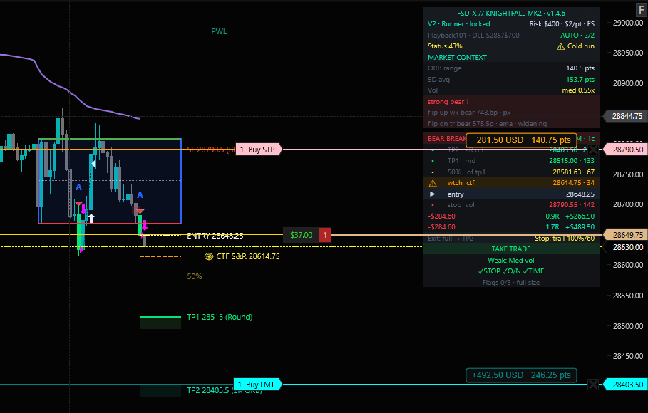
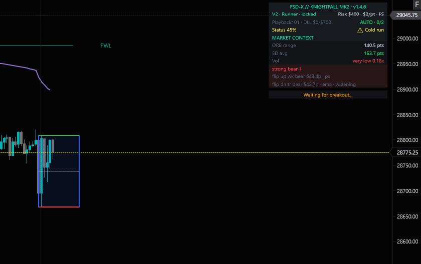
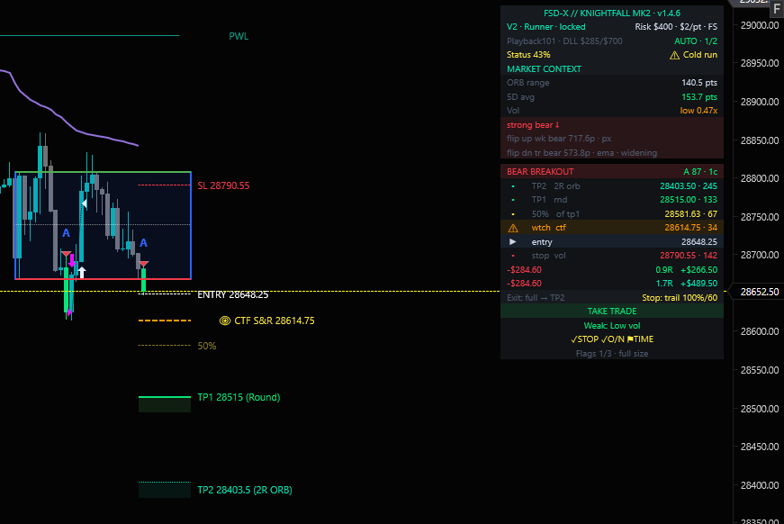
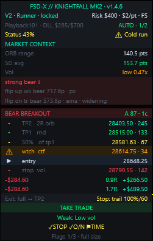

Knightfall is live
on NinjaTrader.
Native. All in one.
The full FSD-X method, rebuilt as a native NinjaTrader 8 strategy. Let it trade hands-free, or take the trades yourself off the same chart. No webhooks, no alert setup, no bridge between your chart and your account.
The full membership on NinjaTrader 8: pay once, no subscription.
Already a member? Go to the NinjaTrader hub →

Watch it trade on NinjaTrader.
Knightfall running hands-free on NinjaTrader 8: the opening range, the breakout grade, and the entry, stop and targets placed and managed as working orders.

Demo footage for illustration. One trade, chosen to show every stage of the order flow; it is not typical of every session and not a performance result. Futures trading involves substantial risk of loss. More videos in the Knowledge Base →


Screenshots from a NinjaTrader playback account, shown to illustrate how orders are placed and managed. Dollar figures on screen are one open position at that moment, not a performance result, and not indicative of future results.
Everything in one place.
On TradingView, hands-free trading means a paid plan for webhooks, alert setup, and a bridge service to reach your broker. On NinjaTrader, the strategy lives on the platform that places the order.
One strategy, two ways to run it. Let it take and manage the trade, or keep the read and click the trade yourself.
Orders go from NinjaTrader to the account you connect. No webhook, no alert message, no service in the middle to pay for or break.
Stop and target sit on the chart as working orders. You see exactly what's live at your account, right next to the setup.
The Knightfall read you know: every breakout graded, ORB size checked against its 5-day average, stops and targets placed by the same rules.
The dashboard shows what's at risk and the R to each target before you're in — sized to the risk setting you choose.
One platform for charting, the read and execution. Less to set up, less to monitor, fewer places for something to go wrong.
The whole read. One panel.
The Market Context panel carries over from TradingView, rebuilt for NinjaTrader. Top to bottom, it answers the questions you’d otherwise be asking yourself at 8:45.

A B C DToday's ORB range against the 5-day average, volume, and the trend read. Is this a morning worth trading?
Breakout direction, letter grade and score. The grade sets the size.
Entry, stop, TP1, TP2, the 50% mark and watch levels — each tagged with its source, like a round number or volatility.
Take the trade or skip it, with any weak spots called out so you know what you're signing up for.
Illustrative screenshot. Dollar figures are position sizing for one setup, not a performance result.
The full membership on NinjaTrader 8.
Knightfall with automation built in, Volume and Raven, the member platform, Nexus, the live trade room and the VIP Discord. Pay once, or subscribe.
Quick answers.
How do I get it?+
It comes with the FSD-X Trading Pro — NinjaTrader 8 membership, along with Volume, Raven, the member platform, Nexus, the live trade room and the VIP Discord. Pay once, or subscribe. See pricing.
Which email does my license use?+
The email you log into NinjaTrader with. You enter it at checkout. If it's different from your Whop email, that's fine — just make sure it matches your NinjaTrader login. You can change it later from the NinjaTrader hub.
Do I need TradingView or a bridge service for it?+
No. It runs inside NinjaTrader 8 and places orders through the account you connect there. No webhooks, alerts or third-party automation service.
Can I use it on prop firm accounts?+
If your firm lets you connect through NinjaTrader and allows automated trading. Rules vary by firm — check yours before running it hands-free. Manual mode is always an option.
Is the TradingView version still available?+
Yes. Knightfall is on TradingView too, with Auto Trade built in. It's its own membership, FSD-X Trading Pro — TradingView, with the same payment options. See TradingView pricing.
Have questions? Talk to the person who built it.
Not sure it fits your setup or your firm? Book a quick call, or look around the free Discord first. No membership needed to ask.